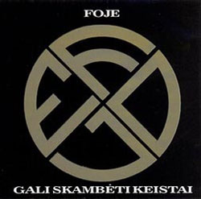

 |
gali skambėti keistai |
Gali skambėti keistai buvo antroji Foje LP, išleista 1991 m. Ji buvo įrašyta grupės lyderį Andrių Mamontovą palikus visiems nariams, išskyrus boso gitara ir klavišiniais grojantį Darių Buroką. Albumas pasižymi akustinės gitaros svarba, ir daugeliu atžvilgiu yra labiau solinis Andriaus Mamontovo albumas nei grupės Foje albumas.
Daina „Jeigu tu ten buvai“, neįtraukta į 1991 m. vinilinį albumą, buvo išleista kasetėje Geras.
Papildoma daina, įtraukta į 1995 m. laidos MC ir CD, buvo „Žvakių šviesoje“ (Christmas version). Ji įrašyta 1993 m. M-1 įrašų studijoje, prodiusavo Andrius Mamontovas, garso režisierius Raimondas Trilikauskis. Šios dainos teksto CD/MC buklete nėra.
Šiame albume pirmąsyk pasirodė apskritimo formos FOJE ženklas, vėliau tapęs populiariausiu grupės logotipu.
LP fonas melsvas, raidės pilkos, CD ir MC – juodas fonas su baltomis raidėmis (logo – rudai auksinis). Šriftai irgi skiriasi. Ant LP antros pusės yra Mamontovo nuotrauka ir Buroko nuotrauka, abi – megėjiškos, iš koncerto. CD ir MC yra jų juodai balti atvaizdai, padaryti iš kitų nuotraukų.
LP buvo be plastikinio plokštelės dėklo – plokštelė buvo įvyniota į didelį popieriaus lapą, taip pat buvo įdėtas plokštelės voko dydžio lapas su dainų tekstais.
Ant LP prodiuseriai nurodyti „Andrius Mamontovas ir Foje“, and MC/CD – „Andrius Mamontovas ir J.D.Beržanskis“.
Įrašyta Varšuvoje, studijoje CCS Intermedia 1991 kovo - balandžio mėn. nemigo naktimis.
Garso operatorius - Jonas Dainius Beržanskis
Garso režisierius - Raimis Trilikauskis.
Prodiuseris - Andrius M. Masteringas ir korekcijos įrašų studijoje "M-1".
LP dizaineriai - Justas Mamontovas, Audrius Jankauskas
- Aš negalvojau išprotėt
- Niekada
- Baltam name
- Upė iš lėto plauks
- Vėjas
- Aš negaliu turėt tavęs
- Amžinas judesys
- Žodžių reikšmė
- Vieną kartą Paryžiuj
- Aš laukiu tavęs
- Jeigu tu ten buvai
- Žvakių šviesoje (Christmas version)
11-12 – tik 1995 m. išleistame MC ir CD
LP I pusė: 1-5; II pusė: 6-10
MC I pusė: 1-6; II pusė: 7-12
- Andrius Mamontovas – balsai, gitaros, E-Bow, mušamieji, perkusija, bosas, klavišiniai
- Darius Burokas – bosas, klavišiniai, akordeonas
- Saulius Valikonis – saksofonai
- Loreta Pereit – balsas
AŠ NEGALVOJAU IŠPROTĖT
aš nematau tokiu kaip aš
aš nematau tokiu kaip tu
aš užmiršau senas dainas
aš nerandu naujų spalvų
aš niekada nenoriu mirt
aš niekada nedrįsiu verkt
aš visada kylau aukštyn
aš visada bandžiau laimėt
aš visada mačiau tave
aš visada aukojaus tau
aš visada tikėjau tuo
tu leidai man užmiršt tave
tu leidai man numirt greičiau
aš niekuomet negimsiu vėl
aš visada kažka žaidžiau
aš negalvojau čia įklimpt
aš negalvojau likt stovėt
aš negalvojau nusivilt
aš negalvojau išprotėt
NIEKADA
tylus balsai artumoje
tau neatvers savo paslapties
niekada
tavo atspindys nieko neištars
tavo akyse niekas neįsižiebs
niekada
BALTAM NAME
baltam name
baltoje šviesoje
aš vaikščiojau vienas
ieškojau taves
ir ta diena
kartu su šviesa
niekada nesibaigia
kartu su šviesa
aš jau išprotėjau
aš jau supratau
aš viską pakeisiu
aš liksiu toks pat
aš nieko nelaukiu
man reikia tiek daug
aš noriu išeiti
aš lieku čia
juoda spalva
juoda spalva
tai mano vienatvė
baltam name
aš jau ne čia
aš jau ne čia
tai mano šešėlis
tai mano dvasia
UPĖ IŠ LĖTO PLAUKS
aš tave pažinau kažkuriame sapne
matėmės jau prieš tai
tik nesakyk kad ne toj pačioj erdvėj
ne tam pačiam laike
tu po manes gimei
aš jau senai ne čia
aš nebandysiu šaukt
šviesmečiu tyloje
tavo akių gelmėj
mano mirties data
upė iš lėto plauks
tu prisimink mane
aš kitoje erdvėje
aš kitame laike
VĖJAS
šalta čia kaip ir jų akyse
ir tamsu čia tarp musų visų
aš atsimenu saulės dienas
giedrą dangų ir meilės rankas
man koktu nuo bereikšmių veidų
man koktu nuo beprasmių kalbų
mes gyvenam lyg žaidžiam lyg ne
norim skristi bet liekam dugne
aš atsimenu dideli vėją
aš matau ta beprotiška aukštį
aš atsimenu atvirą erdvę
aš matau kaip mes skridom su paukščiais
pasakyk ar tu džiaugsmą jauti
kai gatve nežinia kur eini
kai rūkai ir be skaičiaus geri
ką tai keičia tu vėl tik žaidi
tu mane ekrane pamatai
tu žinai negirdžiu ką sakai
jeigu nori prakalbint mane
pabandyk susitikti sapne
AŠ NEGALIU TURĖT TAVES
pokalbis telefonu per naktį iki ryto
atšalusi kava ant stalo gaisras viduje
tai bandymai įrodyt sau kad nieko neįvyko
karščiuojančiu akių žibintai veidrodžio dugne
aš negaliu turėt tavęs
aš noriu tik tavęs
man reikia nusišaut iš ryto
nors tu esi šalia
beprasmiškos svajonės apie tai
kad viskas šventa
beprasmiškas bėgimas
siekiant tikslo tamsoje
aš noriu tau šypsotis
tik žinau kad tai nelemta
mes bandom likti švarūs
ir paskęstame purve
lyg beprotis aš visą naktį
glosčiau tavo plaukus
lyg beprotis stebėjau
tavo miegančias akis
aš negalesiu būt kitoks
net jeigu tu to lauksi
aš nemokėsiu verkti
net jei niekas nematys
AMŽINAS JUDESYS
mes kilsime vis aukštyn
į juodą žvaigždėtą dangų
tik paukščiai ten mus pasieks
mes klyksime jų balsais
mes mosime sparnais
tai bus mūsų stiprios rankos
mes skrisime aukštyn
kol debesys pasibaigs
aš pamenu kaip kadais
visi mes į žemę kritom
mes nebetikėjom tuo
kad kilsime vėl aukštyn
kaip bangos vandenyje
kaip rytas pakeitęs naktį
mes judam aukštyn žemyn
tai amžinas judesys
ŽODŽIŲ REIKŠMĖ
auksas tai tavo tikslai
miestas laukinių namai
žvaigždės pasauliai kiti
norai tai ką jauti
mirti tai gimti kitur
kristi tai kilti žemyn
meilė tai tavo kančia
niekas visa kas čia
laisvė tu jos nejutai
paukščiai tai laisvės vaikai
himnai tai masių daina
melas tai tavo tiesa
bereikšmių žodžių reikšmė
VIENĄ KARTĄ PARYŽIUJ
tavo nekaltybė man atvėrė vėl
akis į saulę
tavo nekaltybė lyg lietus išplovė
užterštas mintis
tavo nekaltybė šį pasaulį man parodė
vėl iš naujo
tavo nekaltybė atidarė užsitrenkusias
duris
vieną kartą paryžiuj
svaičiojau apie tave
vieną kartą paryžiuj
rytui nušvitus lange
tu sugriovei viską ir po to vėl viską
pastatei iš naujo
tu keistai tylėjai taip keistai kad net
prakalbinai mane
tavo nekaltybė išiliejo ir užvaldė
mano kraują
tavo nekaltybė tartum šėlstanti
palaima pragare
AŠ LAUKIU TAVĘS (1990)
mes kažkur erdvėje
mes judam pirmyn
per laiko bangas
kurios mus suves
aš laukiu tavęs
tu veidus matai
aš busiu tarp jų
diena po dienos
artėjame mes
aš laukiu tavęs
aš laukiu tavęs
gal esi su kažkuo
bet tai dar ne aš
ar tu tai jauti
ar lauki manęs
aš laukiu tavęs
jei mirtis bus ankščiau
mes susitiksim po jos
mirties paslaptis
prieš mus atsivers
aš laukiu tavęs
JEIGU TU TEN BUVAI
mes liksime ne čia
neklausk manes kodėl
kai viskas pasibaigs
aš eisiu ten vėl
mes kelsime rankas
nors šypsenų dar nėr
mes juoksimes ilgai
mes grįšim ten vėl
šita tyla gali skambėti keistai
mailė kaip žodis tai tik
sakinių sudėtinė dalis
žodis kaip meilė nedelsdamas
virsta tiesa
kai erdvės pasikeis
kai rodos bus gana
mums dievas neatleis
mes trokšime dar
aš vienas išeinu
ir jau žinau dabar
kad sekančiam laike
mes melsime dar
galbūt tu man melavai
galbūt tu ne tuo tiki
jeigu tu ten buvai
galbūt tu dar esi
ŽVAKIŲ ŠVIESOJE
aš pasiklydau tarp veidų
keistai dažytų svetimų
o byrantis smėlis delnuose
ar tai dekoracija ar ne
kodėl popieriniai žiedai tikresni
už tikrus
kodėl nupaišyti veidai gyvesni
už gyvus
tiktai žvakių šviesoje
savo veidą aš randu
kaip uždegti tas šviesas
kurios degtu visada
aš savo paslaptį turiu
aš pasislėpęs tarp žmonių
juk jei atsiversiu kaip lietus
kitų akyse vistiek tai kaukė bus
mėnulio virpančioj šviesoj
aš jūros ilgesį girdžiu
beribė erdvė mažam kambary
viliojantys toliai paties sukurti